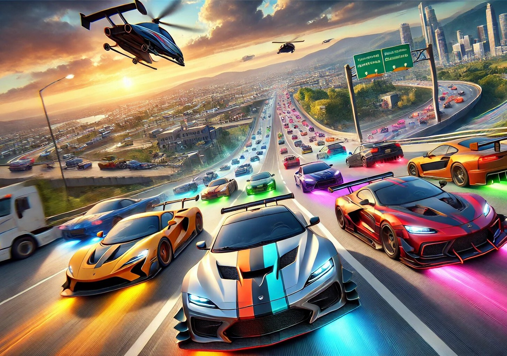

Traffic Rider is one of the most thrilling motorcycle racing games available on mobile platforms. With its first-person perspective, realistic physics, and high-speed gameplay, it offers an immersive experience for racing enthusiasts. Many players seek ways to unlock all cars, tracks, and customizations with unlimited money to enjoy the game to its fullest. In this article, we will explore everything about Traffic Rider, including how to get the latest version and a step-by-step guide to unlocking all features effortlessly.
Unlike traditional racing games, Traffic Rider stands out due to its unique first-person viewpoint, giving players the sensation of actually riding a motorcycle. The game features a variety of bikes, ranging from sportbikes to cruisers, each with distinct handling and speed capabilities. The tracks are designed to mimic real-world highways, complete with dynamic traffic that keeps the gameplay challenging and engaging.
One of the most appealing aspects of Traffic Rider is its career mode, where players complete missions to earn money and unlock new bikes. However, progressing through the game can be time-consuming, which is why many players look for ways to access unlimited money and all unlocked content from the start.
Traffic Rider offers a diverse selection of motorcycles, each with different stats such as top speed, acceleration, and braking. Some of the most popular bikes in the game include the Ninja H2R, Ducati Panigale, and BMW S1000RR. Unlocking these bikes normally requires completing numerous missions and saving up in-game currency, but with unlimited money, players can purchase and upgrade any bike instantly.
Having access to all bikes allows players to experiment with different riding styles and find the perfect motorcycle for their preferences. Whether you prefer a high-speed sportbike or a more balanced touring bike, Traffic Rider has something for everyone.
The game features multiple tracks set in different environments, including highways, countryside roads, and night-time circuits. Each track presents unique challenges, such as varying traffic density and weather conditions. Some tracks are only unlocked after reaching certain milestones in career mode, but with unlimited money, players can access all tracks immediately.
Racing on different tracks keeps the gameplay fresh and exciting. The night-time tracks, in particular, offer a visually stunning experience with illuminated roads and dynamic lighting effects. Players can enjoy endless racing without restrictions by unlocking all tracks from the beginning.
Customizing bikes is a major part of Traffic Rider. Players can upgrade engine performance, brakes, and handling to enhance their motorcycle's capabilities. Additionally, visual customizations such as paint jobs and decals allow for personalization. Normally, these upgrades require significant in-game currency, but with unlimited money, players can max out all stats and create their dream bike effortlessly.
Unlimited money also enables players to experiment with different setups without worrying about costs. Whether you want a speed-focused build or a balanced configuration, having unlimited resources makes the customization process much more enjoyable.
To enjoy all the latest features, it's essential to have the most recent version of Traffic Rider. The game receives periodic updates that include new bikes, tracks, and bug fixes. The latest version can be downloaded from the Google Play Store or Apple App Store. However, some players look for modified versions (mod APKs) that provide unlimited money and unlocked content.
While modded versions offer instant access to all features, it's important to download them from trusted sources to avoid malware or security risks. Always check user reviews and verify the authenticity of the file before installation.
For players who want unlimited money without using mods, there are alternative methods such as using game guardian or completing specific in-game tricks. Below is a simple step-by-step guide to help you unlock unlimited money in Traffic Rider.
First, ensure you have the latest version of the game installed. Next, look for reputable mod APK websites that offer unlimited money versions. Download the file and enable installation from unknown sources in your device settings. Install the APK and open the game to verify that unlimited money is active.
Another method involves using in-game exploits or cheat codes, though these are less common. Some players also use third-party apps to modify game data, but this can be risky and may result in account bans. The safest approach is to use a verified mod APK from a reliable source.
With unlimited money and all content unlocked, players can fully enjoy Traffic Rider without grinding through missions. This allows for a more relaxed and exploratory gameplay experience, where the focus shifts from earning money to mastering tracks and bikes.
Whether you're a casual player looking for fun or a hardcore racing fan aiming for high scores, having unlimited resources enhances the overall enjoyment of the game. The ability to customize bikes, unlock all tracks, and ride the fastest motorcycles makes Traffic Rider an even more thrilling experience.
Traffic Rider is a fantastic motorcycle racing game that offers realism, speed, and excitement. By unlocking all cars, tracks, and customizations with unlimited money, players can maximize their enjoyment without the limitations of in-game progression. Whether through mod APKs or other methods, accessing these features allows for a more immersive and stress-free gaming experience.
If you're looking to dive into the world of high-speed motorcycle racing with no restrictions, follow the steps mentioned above and get ready to experience Traffic Rider like never before. Download the latest version, unlock all content, and enjoy the ride!